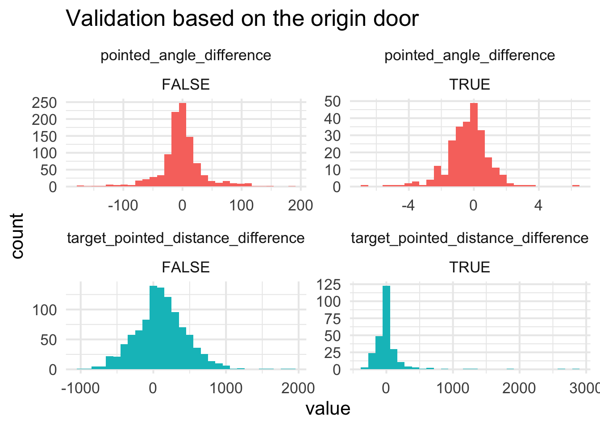
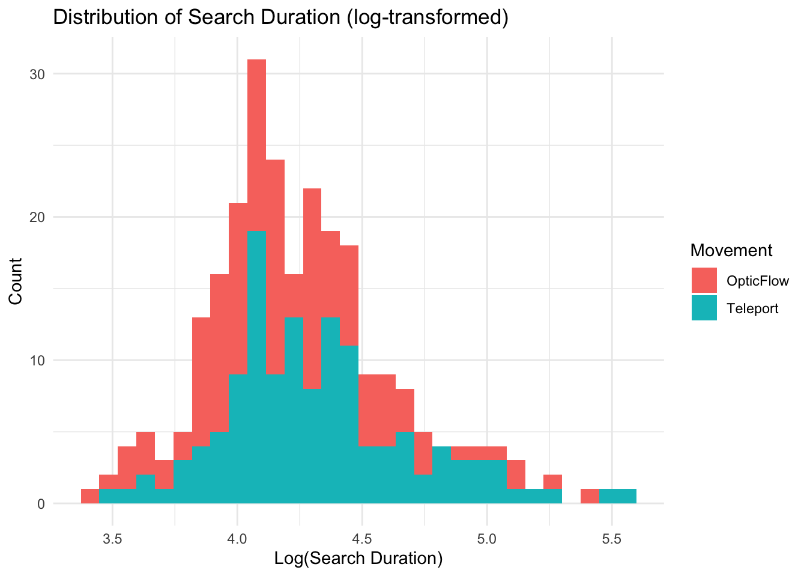

How long it took to complete the experiment in various conditions, especially comparing the same size vista vs non-vista levels and its interaction with movement mode
Visualisations
Validation of the pointing data
Validation based on the origin door
`stat_bin()` using `bins = 30`. Pick better value with `binwidth`.

Testing if the different variation of the verbal isntruction made any difference
Importantly, the vista is not a significant predictor on its own, but it inteacts with both movement and vista spaces. People overall overshoot the target in small levels by about 3 virtual meters.
While on its own, the movement mode does not significantly affect the pointing distance error, it interacts with both the vista condition and the level size. The marginal effects show the Teleportation leading to higher distaces
Relative distance error
A relative measure to account for the fact that larger distances might lead to larger absolute errors
We can observe that the relative distance error is also affected by the same factors as the absolute distance error, and in the same directions, but only the level size becomes a significant predictor.
Pointing angle error
`stat_bin()` using `bins = 30`. Pick better value with `binwidth`.
Generalized linear mixed model fit by maximum likelihood (Laplace
Approximation) [glmerMod]
Family: gaussian ( log )
Formula: abs_pointed_angle_difference ~ Movement + LevelSize + Vista +
Movement:LevelSize + Movement:Vista + (1 | participant)
Data: .
AIC BIC logLik deviance df.resid
9976.8 10016.2 -4980.4 9960.8 1016
Scaled residuals:
Min 1Q Median 3Q Max
-2.3394 -0.5827 -0.2682 0.2638 5.3001
Random effects:
Groups Name Variance Std.Dev.
participant (Intercept) 103.1 10.15
Residual 745.1 27.30
Number of obs: 1024, groups: participant, 32
Fixed effects:
Estimate Std. Error t value Pr(>|z|)
(Intercept) 3.24419 0.09627 33.700 <2e-16 ***
MovementTeleport 0.02512 0.10567 0.238 0.812
LevelSizeSmall -0.21803 0.09925 -2.197 0.028 *
VistaVista -0.05604 0.09687 -0.579 0.563
MovementTeleport:LevelSizeSmall 0.17548 0.13444 1.305 0.192
MovementTeleport:VistaVista -0.13852 0.13320 -1.040 0.298
---
Signif. codes: 0 '***' 0.001 '**' 0.01 '*' 0.05 '.' 0.1 ' ' 1
Correlation of Fixed Effects:
(Intr) MvmntT LvlSzS VstVst MT:LSS
MovmntTlprt -0.592
LevelSzSmll -0.396 0.372
VistaVista -0.475 0.426 -0.014
MvmntTl:LSS 0.293 -0.541 -0.739 0.006
MvmntTlp:VV 0.338 -0.539 0.014 -0.722 -0.025
x
group
facet
predicted
std.error
conf.low
conf.high
OpticFlow
Nonvista
Large
27.48348
2.645772
22.29168
32.67529
OpticFlow
Nonvista
Small
22.09947
2.375608
17.43781
26.76113
OpticFlow
Vista
Large
25.98558
2.570715
20.94106
31.03010
OpticFlow
Vista
Small
20.89501
2.271192
16.43825
25.35177
Teleport
Nonvista
Large
28.18258
2.581071
23.11774
33.24742
Teleport
Nonvista
Small
27.00843
2.567639
21.96994
32.04691
Teleport
Vista
Large
23.19963
2.347271
18.59358
27.80568
Teleport
Vista
Small
22.23308
2.251008
17.81592
26.65024
We can see that the angle error was affected by the size of the environment, with larger environments leading to larger errors. However, there was no significant effect of movement mode or vista condition on angle error.
Smaller analyses
Pointing duration to see when people considered the distance the most
`stat_bin()` using `bins = 30`. Pick better value with `binwidth`.
Generalized linear mixed model fit by maximum likelihood (Laplace
Approximation) [glmerMod]
Family: gaussian ( log )
Formula:
pointing_duration ~ Movement + LevelSize + Vista + Movement:LevelSize +
Movement:Vista + (1 | participant)
Data: df_trials_model
AIC BIC logLik deviance df.resid
5509.0 5548.4 -2746.5 5493.0 1016
Scaled residuals:
Min 1Q Median 3Q Max
-3.4162 -0.5557 -0.1464 0.3601 8.9847
Random effects:
Groups Name Variance Std.Dev.
participant (Intercept) 1.06 1.030
Residual 10.38 3.222
Number of obs: 1024, groups: participant, 32
Fixed effects:
Estimate Std. Error t value Pr(>|z|)
(Intercept) 1.991088 0.064461 30.888 < 2e-16 ***
MovementTeleport 0.004318 0.044775 0.096 0.923
LevelSizeSmall -0.245768 0.041675 -5.897 3.69e-09 ***
VistaVista -0.056841 0.040825 -1.392 0.164
MovementTeleport:LevelSizeSmall 0.152021 0.055328 2.748 0.006 **
MovementTeleport:VistaVista 0.050043 0.054624 0.916 0.360
---
Signif. codes: 0 '***' 0.001 '**' 0.01 '*' 0.05 '.' 0.1 ' ' 1
Correlation of Fixed Effects:
(Intr) MvmntT LvlSzS VstVst MT:LSS
MovmntTlprt -0.382
LevelSzSmll -0.266 0.390
VistaVista -0.316 0.457 0.056
MvmntTl:LSS 0.202 -0.532 -0.755 -0.045
MvmntTlp:VV 0.239 -0.607 -0.043 -0.753 0.035
x
group
facet
predicted
std.error
conf.low
conf.high
OpticFlow
Nonvista
Large
7.713356
0.4972132
6.737673
8.689038
OpticFlow
Nonvista
Small
6.032644
0.4029909
5.241854
6.823434
OpticFlow
Vista
Large
7.287151
0.4700007
6.364868
8.209434
OpticFlow
Vista
Small
5.699308
0.3889148
4.936140
6.462476
Teleport
Nonvista
Large
7.746738
0.4870054
6.791086
8.702389
Teleport
Nonvista
Small
7.053507
0.4515922
6.167347
7.939667
Teleport
Vista
Large
7.694257
0.4846423
6.743243
8.645272
Teleport
Vista
Small
7.005723
0.4492433
6.124172
7.887274
Navigated distance
Call:
glm(formula = (distance_items + distance_return) ~ Movement +
Vista + LevelSize + Movement:Vista + Movement:LevelSize,
family = gaussian(link = "log"), data = df_data)
Coefficients:
Estimate Std. Error t value Pr(>|t|)
(Intercept) 10.18141 0.04046 251.622 < 2e-16 ***
MovementTeleport -0.03042 0.05632 -0.540 0.590
VistaVista -0.27483 0.06139 -4.477 1.15e-05 ***
LevelSizeSmall -0.68506 0.07288 -9.400 < 2e-16 ***
MovementTeleport:VistaVista 0.09651 0.08423 1.146 0.253
MovementTeleport:LevelSizeSmall -0.02383 0.10266 -0.232 0.817
---
Signif. codes: 0 '***' 0.001 '**' 0.01 '*' 0.05 '.' 0.1 ' ' 1
(Dispersion parameter for gaussian family taken to be 37116598)
Null deviance: 1.9173e+10 on 255 degrees of freedom
Residual deviance: 9.2791e+09 on 250 degrees of freedom
AIC: 5196.4
Number of Fisher Scoring iterations: 5
Some of the focal terms are of type `character`. This may lead to
unexpected results. It is recommended to convert these variables to
factors before fitting the model.
The following variables are of type character: `Movement`, `Vista`,
`LevelSize`
x
group
facet
predicted
conf.low
conf.high
Teleport
Nonvista
Large
25616.59
23713.923
27671.92
Teleport
Nonvista
Small
12608.26
10996.614
14456.10
Teleport
Vista
Large
21432.88
19554.150
23492.11
Teleport
Vista
Small
10549.07
9132.799
12184.97
OpticFlow
Nonvista
Large
26407.72
24384.905
28598.34
OpticFlow
Nonvista
Small
13311.07
11632.596
15231.73
OpticFlow
Vista
Large
20062.04
18148.621
22177.20
OpticFlow
Vista
Small
10112.47
8709.686
11741.19
Movement did not significantly affect the distance travelled, but vista spaces led to significantly shorter distances travelled.
Navigated duration

Call:
glm(formula = (duration_return + duration_searching) ~ Movement +
Vista + LevelSize + Movement:Vista + Movement:LevelSize,
family = gaussian(link = "log"), data = df_data)
Coefficients:
Estimate Std. Error t value Pr(>|t|)
(Intercept) 4.59852 0.05801 79.272 < 2e-16 ***
MovementTeleport 0.09787 0.07618 1.285 0.20010
VistaVista -0.21901 0.07596 -2.883 0.00428 **
LevelSizeSmall -0.14776 0.07482 -1.975 0.04938 *
MovementTeleport:VistaVista 0.12488 0.09904 1.261 0.20850
MovementTeleport:LevelSizeSmall -0.06157 0.09903 -0.622 0.53468
---
Signif. codes: 0 '***' 0.001 '**' 0.01 '*' 0.05 '.' 0.1 ' ' 1
(Dispersion parameter for gaussian family taken to be 1204.808)
Null deviance: 339875 on 255 degrees of freedom
Residual deviance: 301202 on 250 degrees of freedom
AIC: 2550.5
Number of Fisher Scoring iterations: 5
Some of the focal terms are of type `character`. This may lead to
unexpected results. It is recommended to convert these variables to
factors before fitting the model.
The following variables are of type character: `Movement`, `Vista`,
`LevelSize`
x
group
facet
predicted
conf.low
conf.high
Teleport
Nonvista
Large
109.55148
99.39772
120.74247
Teleport
Nonvista
Small
88.86048
79.18153
99.72256
Teleport
Vista
Large
99.71017
89.71282
110.82160
Teleport
Vista
Small
80.87790
71.69333
91.23911
OpticFlow
Nonvista
Large
99.33754
88.61267
111.36046
OpticFlow
Nonvista
Small
85.69261
75.64642
97.07299
OpticFlow
Vista
Large
79.79918
69.90430
91.09466
OpticFlow
Vista
Small
68.83802
59.61108
79.49316
while the movement method did affect the navigated duration when considered on its own, it did not significantly affect the duration when the model included the interaction parameters.